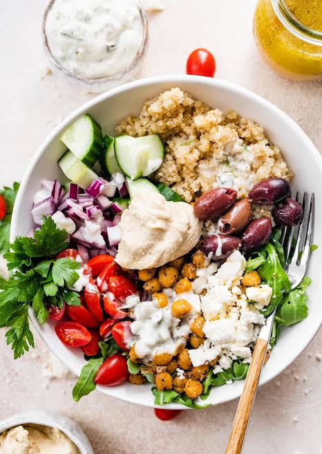

Home
Turkey and Quinoa Bowl

Description
One of my favorite meal-prep meals to have throughout the week, Turkey and quinoa bowls are delicous and light.
Easy to make in large batches or for just one meal. It brings some quick and simple mediterranean flavors straight to your table.
Ingrediants
- 1 pound of ground turkey
- garlic and herb seasoning
- Quinoa (you can use instant or frozen quinoa to save time)
- Cucumbers
- Kalamata olives
- Feta Cheese
- Bell peppers
The Sauce
You can either make this sauce at home, but premade tatziki sauce works just as well!
- 2 cups of plain greek yogurt
- Olive oil
- Dill
- Cucumber
- Distillid white vinegar
- Salt
- Black pepper
Steps
- Preheat oven to 375f
- In a medium size mixing bowl, mix the ground turkey with salt and garlic herb seaoning.
Shape ground turkey into eight meatballs roughly the same size.
Place on a baking sheet and place into oven for 10-12 minutes
- you bought istant or frozen quinoa, you can skip this step.
Add three cups of water to a pot and bring to a boil.
Then add 1 1/2 cups of quinoa and let it cook for about 10 minutes or untill quinoa absorbs all the water.
- Mix all the sauce ingrediants in a bowl.
- Cut cumcumber, bell peppers, and olives however you like, and put them into a bowl with the finished quinoa.
- Add the meatballs, tatziki sauce, and feta, then serve!